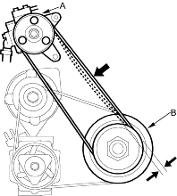
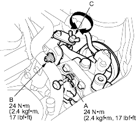

Inspection
- Apply a force of 98 N (10 kgf, 22 lbf) and measure the deflection between the power steering pump pulley (A) and the crankshaft pulley (B). If the belt is worn or damaged, replace it.
Deflection:
Used Belt: 13.0 - 16.5 mm (0.51 – 0.65 in.) New Belt: 9.0 - 11.0 mm (0.35 - 0.43 in.) - If you installed a new belt, run the engine for 5 minutes, then readjust the belt to the used belt specification.

- Loosen the power steering pump mounting nut (A) and pump locknut (B).

- Turn the adjusting bolt (C) to get the proper belt tension, then retighten the mounting nut and locknut.
- Start the engine and turn the steering wheel from lock-to-lock several times, then stop the engine and recheck the tension of the belt.